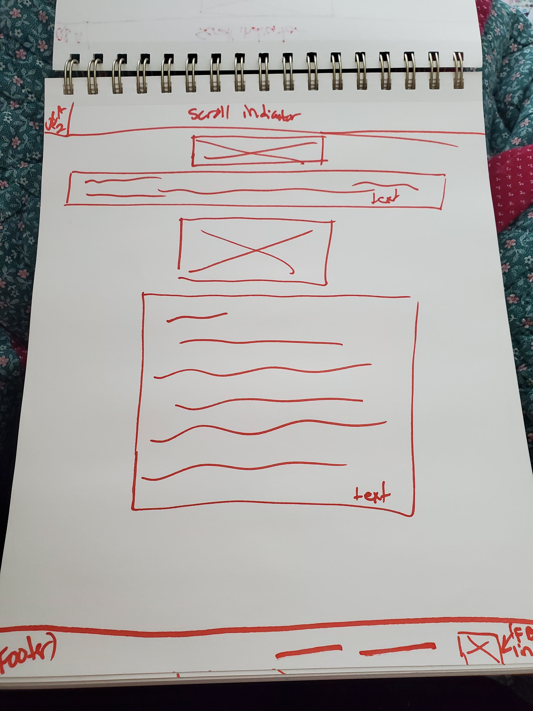
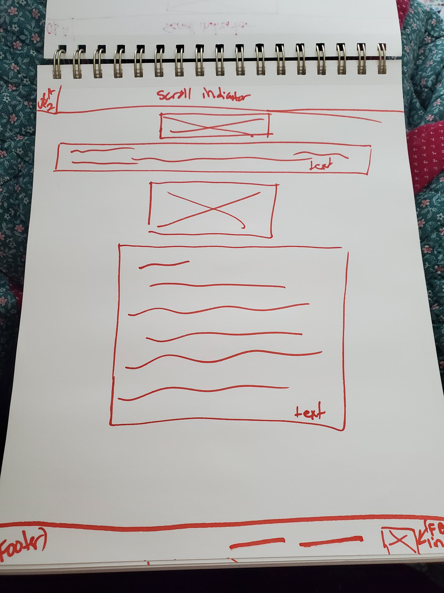

Overview
Purpose
Are you tired of people not knowing how to contact you? Wanting people to know more about your business, but you’re tired of explaining yourself? Well, Darci Rollingson has this issue, so I plan to make her a website where she can introduce herself and her business. She is a long-arm quilter, which means people bring her the top part, their finished quilt tops and a bottom piece and ask her to add a finishing touch to their soon-to-be-new quilt. This finishing touch adds extravagant patterns like flowers, zebra stripes, and many more. This website would allow people to see some of the many quilts she has done and figure out if she would be the best fit for them. This website would include an introduction page on Darci Rollingson, pictures of some of her finished work, and list ways to contact her.
Audience
The intended audience for this assignment are people who would be buying Darci's business. Darci has a long-arm quilt machine, which is a very expensive machine that is used to add extravagant threaded patterns onto quilts. Doing patterns by hand the way the machine does would take months compared to the three to five hours it takes for the machine to do it. The focus target audience would most likely be women, especially women who have made their top and bottom peices of the quilts and want to add a finishing touch to their patterns.
Branding
Website Logo
Style Guide
Color Palette
Palette URL:
You make the choices, and she ensures your vision gets done
https://coolors.co/ffffff-39d0d0-7b8a8e-747578| Primary | Secondary | Accent 1 | Accent 2 |
|---|---|---|---|
| [#FFFFFF] | [#39D0D0] | [#7B8A8E] | [#747578] |
Typography
Heading Font: IM Fell French Canon SC
Paragraph Font: Roboto, Garamond, sans-serif, Helvetica
Normal paragraph example
Welcome to New Threads Quilting! A small business where you bring in your newly designed quilt tops and bottoms and Darci adds thread patterns to make your awesome quilt look even more professionally done! Darc iw dedication to giving your unique quilt/hard work to ensure the best quality of your quilts. She understands the value of a homemade quilt and puts in only the best into her work!
The way it works is you bring in the top piece of what you want your finished quilt to have and the bottom piece of your quilt then bring it in to Darci to add thread designs like flowers, zebra stripes, ocean waves or many differnt patterns!
Colored paragraph example
NOTE: Put a parpagrpah about Darci here! This will likely be a paragraph on her mission statement
Navigation
Why will people come to this site?
People will be comming to this site to get information about th business "New Threads Quilting." Mainly how to contact her, and what information they have available.
Questions Visitors may have:
"Do I need to provide my own badding?"
"Does this business do binding?"
"where can I read to learn more"
"Can they quilt over different types of fabrics"
"How much does this cost?"
"What expereince do you have?"
What are some things visitors may want to complete on this site?
Since most people using this site will be middle aged to elderly people (40-80+), they will likely be decent enough with websites, but will need to be able to mostly read and click on headings. They might like the idea of booking online, but for now, they will just need to get information about her. Easily find her contact information (reason its in navigation not below), find her experience, see some quilts she’s done in the past and most recently
What information is necessary to complete any actions this site offers?
Easy to read text, short and to the point, but will need multiple paragraphs, easy to find information, can find pictures, so I need to use a lot of graphing in the code, I’ll need to make sure that the colors don’t contrast to crazy against each other and that the information is easy to see.
Why will your visitors come to this site instead of another to get this information or complete the actions?
If they are going specifically to Darci, this website will be the only website they can use to get all the information they want about her and her business. Facebook doesn't have all the information they would need so the website will be a good connection. The only thing that would be a competition is making them want Darci over other Long-arm Quilters.


Site Map
Wireframes
Home
Q&A
 
